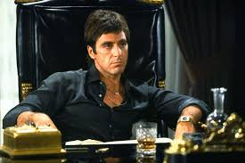

ANTONIO "TONY" MONTANA ~ "ScarFace"

Antonio "Tony" Montana is a fictional character portrayed by Al Pacino in the 1938 film Scarface.
Tony is a Cuban immigrant who rises to become a powerful drug lord in Miami. His charismatic personality, unwavering determination, and ruthless pursuit of power make him both a compelling and complex figure.
His greed and wild ambitions ultimately lead to his downfall. Despite his flaws, Tony Montana remains an enduring symbol of the American Dream gone awry, captivating audiences with his larger-than-life presence and unforgettable journey.
- Charismatic Personality: Tony Montana is depicted as having a charismatic and larger-than-life personality. He has an ability to command attention and dominate any situation he is in.
- Rags-to-Riches Story: Tony Montana's story of immigrating from humble beginnings in Cuba to becoming a powerful and wealthy drug lord in the US is very inspiring to me. His story represents a classic "rags-to-riches" narrative.
- Moral ambiguity: I believe Tony Montana is a much more complex character than the regular drug lord character. In certain moments of the movie, he shows vulnerability, loyalty, and even self-reflection.